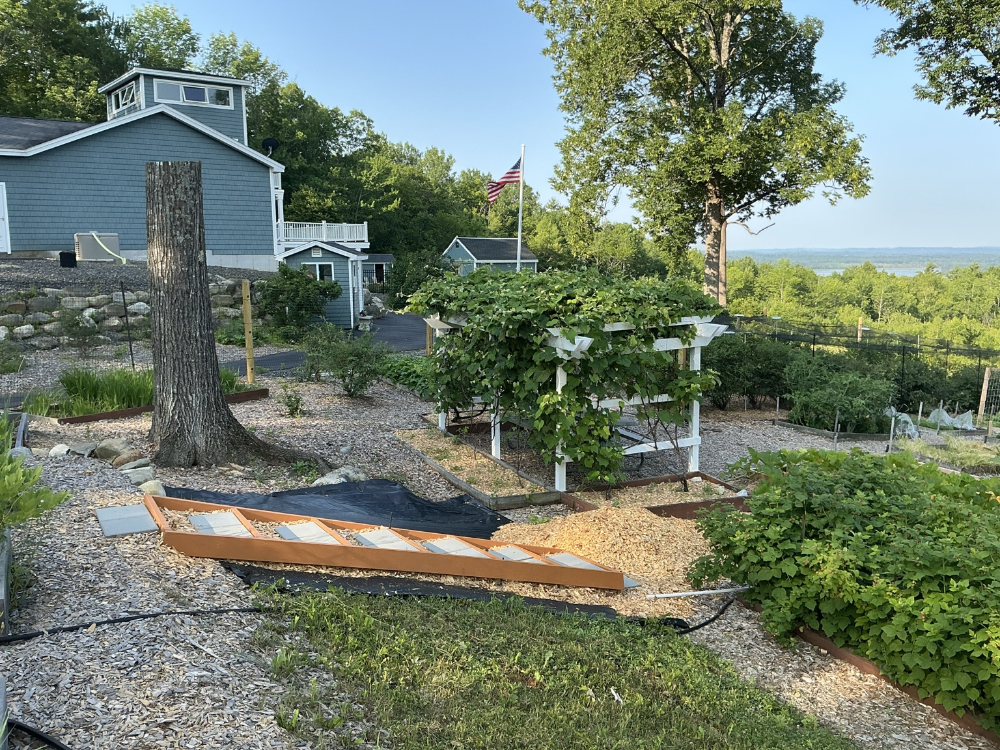
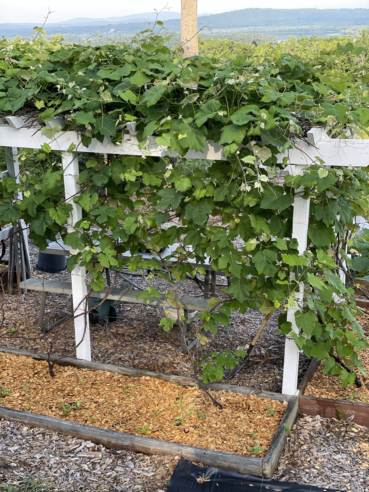
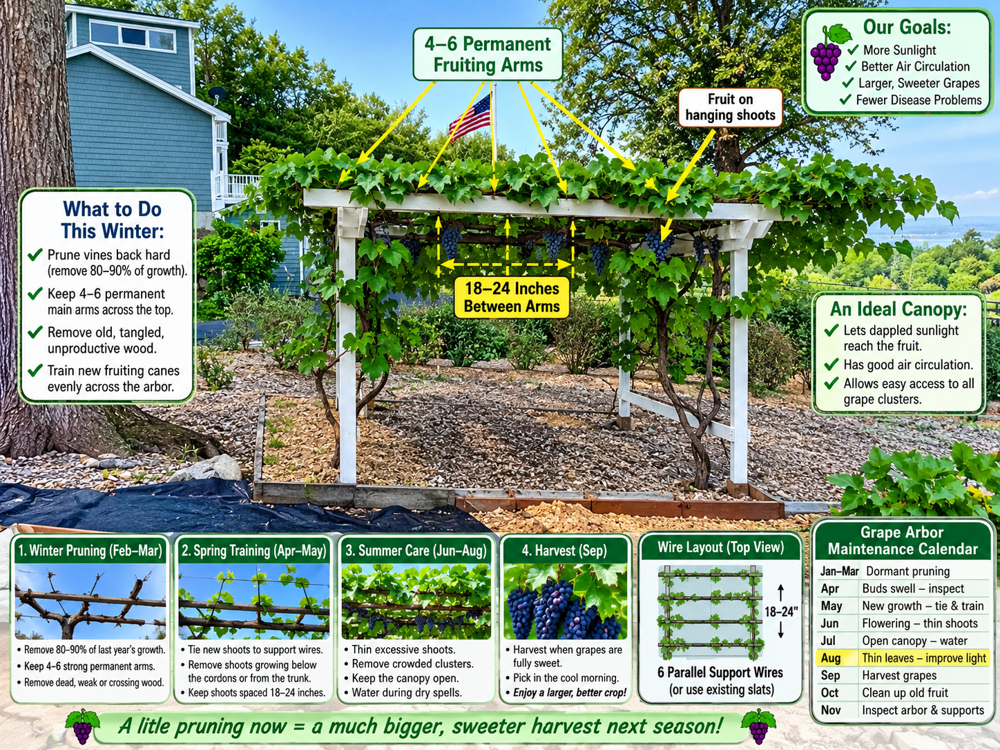

The structure is sound—the vines need retraining
Lou’s white grape arbor is sturdy and well placed. The primary production issue is the very dense canopy, tangled fruiting wood, and long shoots hanging below the arbor. The plan is to retain the structure, establish an orderly framework, and open the canopy gradually.
Current August goal: remove only about 15–20% of excessive leafy growth, especially long runners, weak interior shoots, and vines hanging toward the ground. Avoid severe pruning while the vines are actively growing.

Current canopy

The top is healthy but crowded. Future fruiting shoots should be distributed evenly so clusters receive dappled sunlight and moving air.
Winter pruning and training plan
Use this as a planning illustration rather than an exact map of every cut. Final cane selection should be done when the leaves are off and the permanent trunks and one-year-old wood can be seen clearly.

Recommended approach
No rebuilding is needed unless damaged wood is discovered.
Retain approximately 4–6 well-spaced permanent arms across the top.
Where useful, add galvanized or stainless support wires roughly 18–24 inches apart.
In late February or March, remove old, weak, crossing, and excess growth while retaining productive one-year-old fruiting wood.
During summer, position shoots and maintain small openings where patches of sky are visible.
Healthy vigorous vines usually need little or no summer fertilizer.